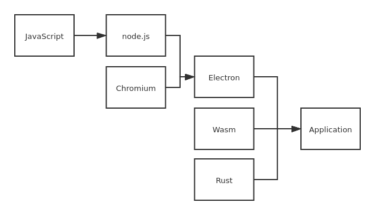

Electron

基础知识
JavaScript
JavaScript 也是一种嵌入式（embedded）语言。它本身提供的核心语法不算很多，只能用来做一些数学和逻辑运算。JavaScript 本身不提供任何与 I/O（输入/输出）相关的 API，都要靠宿主环境（host）提供，所以 JavaScript 只合适嵌入更大型的应用程序环境，去调用宿主环境提供的底层 API。
目前，已经嵌入 JavaScript 的宿主环境有多种，最常见的环境就是浏览器，另外还有服务器环境，也就是 Node 项目。
从语法角度看，JavaScript 语言是一种“对象模型”语言。各种宿主环境通过这个模型，描述自己的功能和操作接口，从而通过 JavaScript 控制这些功能。但是，JavaScript 并不是纯粹的“面向对象语言”，还支持其他编程范式（比如函数式编程）。
JavaScript 语言的每一个值，都属于某一种数据类型。JavaScript 的数据类型，共有六种。（ES6 又新增了第七种 Symbol 类型的值）
- 数值（number）：整数和小数（比如
1和3.14）。- 字符串（string）：文本（比如
Hello World）。- 布尔值（boolean）：表示真伪的两个特殊值，即
true（真）和false（假）。undefined：表示“未定义”或不存在，即由于目前没有定义，所以此处暂时没有任何值。null：表示空值，即此处的值为空。- 对象（object）：各种值组成的集合。对象是最复杂的数据类型，又可以分成三个子类型。
- 狭义的对象（object）
- 数组（array）
- 函数（function）
undefined 和 null
null表示空值，即该处的值现在为空。调用函数时，某个参数未设置任何值，这时就可以传入null，表示该参数为空。比如，某个函数接受引擎抛出的错误作为参数，如果运行过程中未出错，那么这个参数就会传入null，表示未发生错误。
undefined表示“未定义”，下面是返回undefined的典型场景。// 变量声明了，但没有赋值 var i; i // undefined // 调用函数时，应该提供的参数没有提供，该参数等于 undefined function f(x) { return x; } f() // undefined // 对象没有赋值的属性 var o = new Object(); o.p // undefined // 函数没有返回值时，默认返回 undefined function f() {} f() // undefined会自动转换成false的值:
undefinednullfalse0NaN""或''（空字符串）
Node.js
npm就像cargo之于rust，pip之于python，nodejs就像rustc。目前给我的感觉是这样的。
If a project has a
package.jsonfile, by runningnpm install
- package.json
versionindicates the current versionnamesets the application/package namedescriptionis a brief description of the app/packagemainset the entry point for the applicationprivateif set totrueprevents the app/package to be accidentally published onnpmscriptsdefines a set of node scripts you can rundependenciessets a list ofnpmpackages installed as dependenciesdevDependenciessets a list ofnpmpackages installed as development dependenciesenginessets which versions of Node.js this package/app works onbrowserslistis used to tell which browsers (and their versions) you want to support
A Node.js app runs in a single process, without creating a new thread for every request. Node.js provides a set of asynchronous I/O primitives in its standard library that prevent JavaScript code from blocking and generally, libraries in Node.js are written using non-blocking paradigms, making blocking behavior the exception rather than the norm.
When Node.js performs an I/O operation, like reading from the network, accessing a database or the filesystem, instead of blocking the thread and wasting CPU cycles waiting, Node.js will resume the operations when the response comes back.
Nodejs是单进程的。但是提供了异步IO。
require: 给我的感觉有点像import，从外部导入一些东西。有些东西是不需要require的（感觉就像内置的一样），比如下面的process
process
Note:
processdoes not require a "require", it's automatically available.
process: The process core module of Node.js provides the env property which hosts all the environment variables that were set at the moment the process was started.
console
console.log()可以向stdout输出内容，console.error()可以向stderr输出内容。还有利用控制字符添加颜色的chalk库。
const chalk = require('chalk')
console.log(chalk.yellow('hi!'))
一些有用的包
const readline = require('readline').createInterface({ input: process.stdin, output: process.stdout})
readline.question(`What's your name?`, name => { console.log(`Hi ${name}!`) readline.close()})
Chromium
V8 JavaScript Engine is the thing that takes our JavaScript and executes it while browsing with Chrome. V8 provides the runtime environment in which JavaScript executes. The DOM, and the other Web Platform APIs are provided by the browser.
The Node.js ecosystem is huge and thanks to V8 which also powers desktop apps, with projects like Electron.
V8引擎是Chrome浏览器使用的，可以执行JS代码。但是他又是独立于浏览器的，所以我们可以利用它构建其他应用，比如桌面应用，Electron。
JavaScript is generally considered an interpreted language, but modern JavaScript engines no longer just interpret JavaScript, they compile it. JavaScript is internally compiled by V8 with just-in-time (JIT) compilation to speed up the execution..
Electron
每个 Electron 应用都有一个单一的主进程，作为应用程序的入口点。 主进程在 Node.js 环境中运行，这意味着它具有
require模块和使用所有 Node.js API 的能力。主进程的主要目的是使用
BrowserWindow模块创建和管理应用程序窗口。BrowserWindow类的每个实例创建一个应用程序窗口，且在单独的渲染器进程中加载一个网页。 您可从主进程用 window 的webContent对象与网页内容进行交互。主进程还能通过 Electron 的
app模块来控制您应用程序的生命周期。 该模块提供了一整套的事件和方法，可以使你添加自定义的应用程序行为 ( 例如：以编程方式退出您的应用程序、修改程序坞或显示关于面板 ) 。
预加载（preload）脚本包含了那些执行于渲染器进程中，且先于网页内容开始加载的代码 。 These scripts run within the renderer context, but are granted more privileges by having access to Node.js APIs.
什么是主进程
- electron项目启动的时候运行main.js的进程就是主进程
- 一个项目有且只有一个主进程
- 创建窗口等所有系统事件都要在主进程中进行. 简单的说就是我们的electron项目的主进程只有一个, 主进程的执行代码需要写到main.js中, 所有跟系统事件相关的代码统统都要写在这里.
- 主进程通过BrowserWindow创建页面. 每个BrowserWindow实例都在自己的渲染进程中运行, 当BrowserWindow实例被销毁后, 相应的渲染进程也会被终止
什么是渲染进程
- 我们每创建一个web页面都会创建一个渲染进程
- 每个web页面运行在它自己的渲染进程中
- 每个渲染进程是独立的, 它只关心它所运行的页面. 简单理解就是一个web页面一个渲染进程.
- 渲染进程无法使用node
主进程和渲染进程之间如何通信
我看解决方法大部分提到ipc.用sender和receiver完成通信. 但是渲染进程不能使用node提供的接口,我们需要封装一层.参考https://stackoverflow.com/questions/44391448/electron-require-is-not-defined/59888788#59888788
Wasm
WebAssembly是一种新的编码方式，可以在现代的网络浏览器中运行 － 它是一种低级的类汇编语言，具有紧凑的二进制格式，可以接近原生的性能运行，并为诸如C / C ++等语言提供一个编译目标，以便它们可以在Web上运行。它也被设计为可以与JavaScript共存，允许两者一起工作。而且，你在不知道如何编写WebAssembly代码的情况下就可以使用它。WebAssembly的模块可以被导入的到一个网络app（或Node.js）中，并且暴露出供JavaScript使用的WebAssembly函数。JavaScript框架不但可以使用WebAssembly获得巨大性能优势和新特性，而且还能使得各种功能保持对网络开发者的易用性。
在 Rust 中调用来自 JavaScript 的外部函数:
#![allow(unused)] fn main() { #[wasm_bindgen] extern { pub fn alert(s: &str); } }
编写能够在JavaScript中调用的 Rust 函数:
最后一部分是这样的：
#![allow(unused)] fn main() { #[wasm_bindgen] pub fn greet(name: &str) { alert(&format!("Hello, {}!", name)); } }
我觉得调用都好说,但是返回值是怎么处理的.两边用着不一样的类型系统.
JavaScript's garbage-collected heap — where
Objects,Arrays, and DOM nodes are allocated — is distinct from WebAssembly's linear memory space, where our Rust values live. WebAssembly currently has no direct access to the garbage-collected heap (as of April 2018, this is expected to change with the "Interface Types" proposal). JavaScript, on the other hand, can read and write to the WebAssembly linear memory space, but only as anArrayBufferof scalar values (u8,i32,f64, etc...). WebAssembly functions also take and return scalar values. These are the building blocks from which all WebAssembly and JavaScript communication is constituted.
wasm_bindgendefines a common understanding of how to work with compound structures across this boundary. It involves boxing Rust structures, and wrapping the pointer in a JavaScript class for usability, or indexing into a table of JavaScript objects from Rust.wasm_bindgenis very convenient, but it does not remove the need to consider our data representation, and what values and structures are passed across this boundary. Instead, think of it as a tool for implementing the interface design you choose.When designing an interface between WebAssembly and JavaScript, we want to optimize for the following properties:
- Minimizing copying into and out of the WebAssembly linear memory. Unnecessary copies impose unnecessary overhead.
- Minimizing serializing and deserializing. Similar to copies, serializing and deserializing also imposes overhead, and often imposes copying as well. If we can pass opaque handles to a data structure — instead of serializing it on one side, copying it into some known location in the WebAssembly linear memory, and deserializing on the other side — we can often reduce a lot of overhead.
wasm_bindgenhelps us define and work with opaque handles to JavaScriptObjects or boxed Rust structures.As a general rule of thumb, a good JavaScript↔WebAssembly interface design is often one where large, long-lived data structures are implemented as Rust types that live in the WebAssembly linear memory, and are exposed to JavaScript as opaque handles. JavaScript calls exported WebAssembly functions that take these opaque handles, transform their data, perform heavy computations, query the data, and ultimately return a small, copy-able result. By only returning the small result of the computation, we avoid copying and/or serializing everything back and forth between the JavaScript garbage-collected heap and the WebAssembly linear memory.